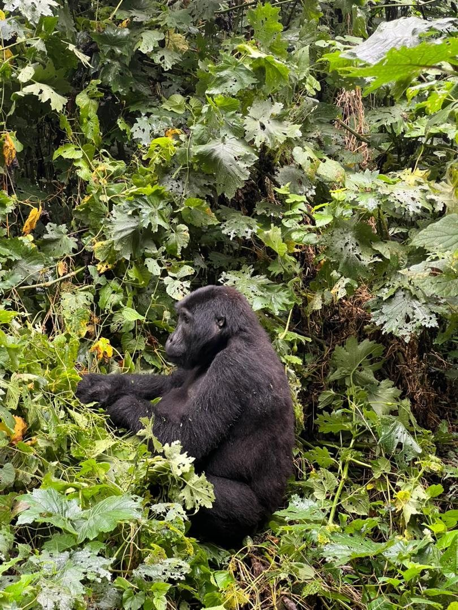
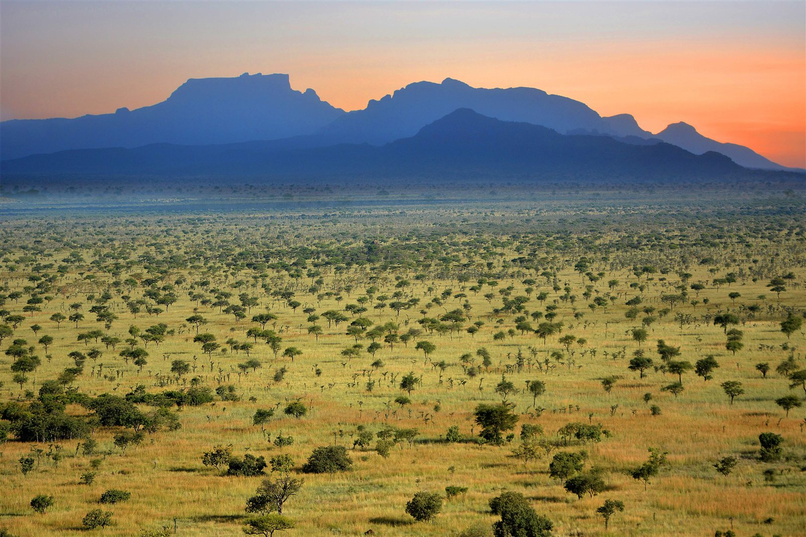
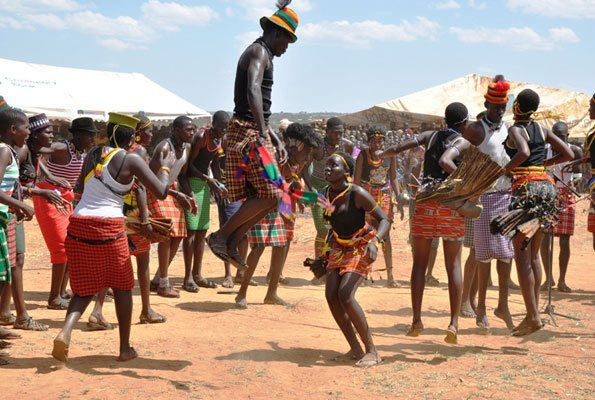
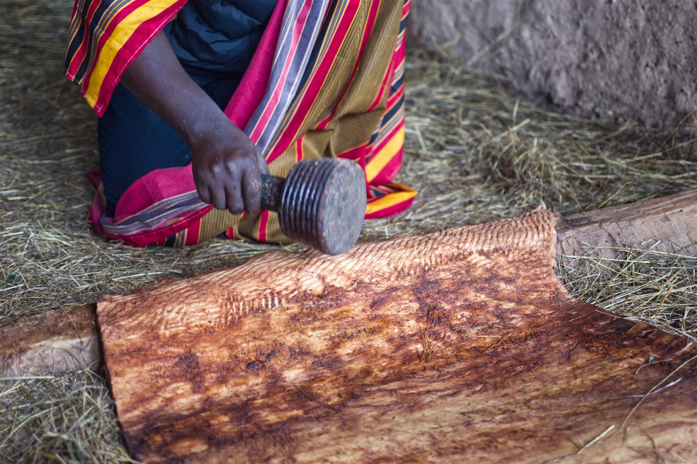
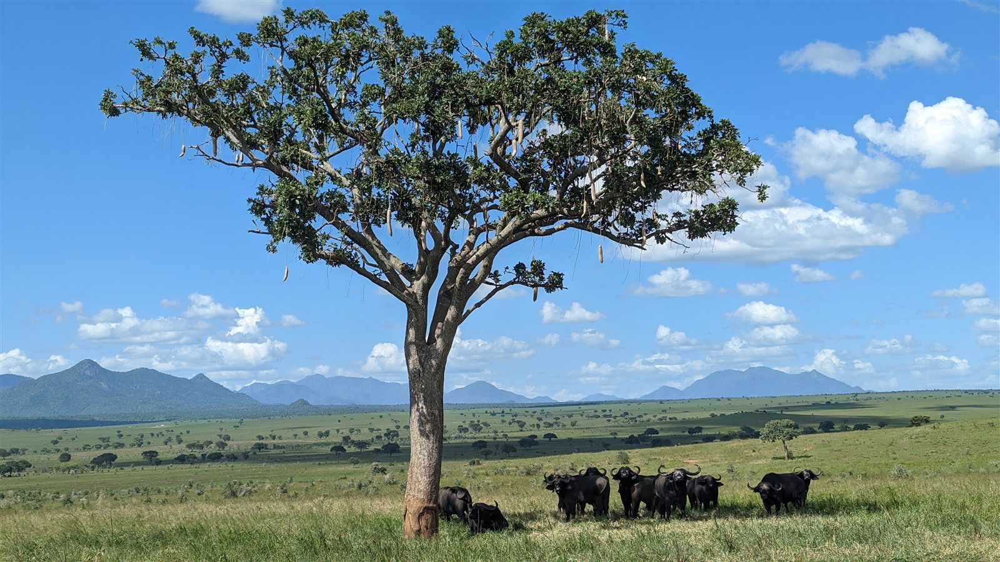

LIVING UGANDAWHAT
WHAT
LIVES
HERE?
Discover its names. Follow its stories.
Life is disappearing.
Extinction is forever.
Pian Upe · Byekwaso Blasio · CC BY-SA 4.0
01 / THE GREY CROWNED CRANE

02 / FOLLOW YOUR CURIOSITY
EVER SEEN IT.
WONDERED
WHAT IT WAS?
03 / PEOPLES & CULTURES
MANY PEOPLES.
MANY WAYS
OF KNOWING.
Names, stories and knowledge passed on.
Meet the peoples of Uganda ↗

04 / LIFE IN RELATION

NO LIFE
LIVES ALONE.
Savannas. Forests. Wetlands. Explore the communities that make a living world.
Explore ecosystems ↗05 / FOLLOW A STORY
EVERY SPECIES
HAS A STORY.
Discovery, survival, extinction—and the possibility of return.

The rhino’s return.
Read the history ↗06 / A PLACE TO STUDY
WHAT WILL
STILL BE HERE
TOMORROW?
Understanding begins with looking closer.